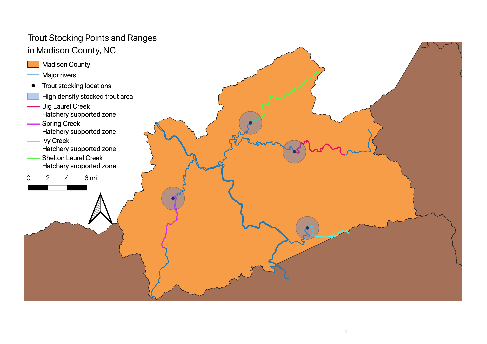

Homework 10: Geospacial Analysis
Robert Harlan
Locations of hatchery supported waters and stocking points for trout in Madison County, NC

The idea for this project came from the question: Where is the most likely location for a fisherman to catch a trout in Madison County, NC? First, I chose this location because I have been fly fishing on many rivers in this county and know from personal experience that not all rivers or even all sections of rivers have equal likelihood of containing “catchable fish,” which are generally 5-10 inches depending on species and time of year. In order to maintain adequate fish populations, the wildlife commission periodically stocks certain rivers and creeks with brown, rainbow, and brook trout.
The state of North Carolina provides data on the ranges of hatchery supported water (water with stocked trout) as well as the stocking location. These ranges can be seen in the unique colors segments for each of the creeks shown above. The four points shown on the creeks show the point of stocking and the buffer surrounding shows the 1.2 mile range that 70% of the stocked fish will remain within according to a study conducted by the Sea Grant of NC (NCSU). These ranges encompass slightly more or less than 1.2 miles upstream and downstream from the stocking point because of curvature in the river. Since the position of fish within a river is so variable, the inconsistencies should not be a concern as the buffer regions serve as a general idea of the most populated fish zone. The hatchery supported areas are upstream of the stocking locations because trout will move upstream to reproduce and prefer colder mountain waters to warmer water at lower elevation. This is also why there are no hatchery supported waters in the French Broad River (the middle S to N river).
Data used for this project
Stocking points shapefile
Major hydrography shapefile
Madison County shapefile
Hatchery supported waters, NC Wildlife Resources Comission (pdf)
Stocking ranges for trout (NCSU, 2020) (Web)